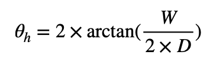
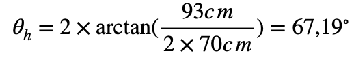
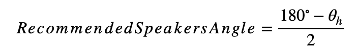
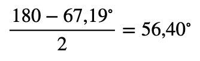

Ideal Studio Monitor Speakers Angle Calculator
Results:
θₕ (Horizontal Angle): degrees
Recommended Monitor Angle: degrees
How do I do it?

First, make sure the monitor speakers are at the same depth in your desk, this is easily done with a tape measure or with a fancy laser level. Then, measure the distance between the monitors. Note that the distance from the monitors are measured from tweeter to tweeter. Now, it is time to measure your distance from the speakers.
To measure your distance from the speakers is a bit trickier, because you have to set a reference within the monitors front panel. In my tests, the farthest side of the front panel yielded better results than from any other point, that is because they serve as a great pivot point to factor in all elements from your studio monitors.
Now, initiate the measure from the above chosen point to your left/right ear. The number read at the measured tape right next to your ear is the depth distance!

Why is it important?

In an ideal scenario, the monitors should be placed in a 60 degree angle to form a perfect triangle (60+60+60 degree triangle). But not always the listener can be at a distance from the speakers where a 60 degree angle is optimal. In my case, I am at 70cm from my speakers (D) and the speakers are 93cm apart from each other (W). So, to calculate my horizontal angle from the speakers, we use the horizontal field of view formula as follows:
And then, we plug in the values measured:
Now, we calculate the complement angles of our triangle:
Plugging in our example values:
And that's it! Now you have your perfect triangle and you can enjoy your music with perfect centrality!